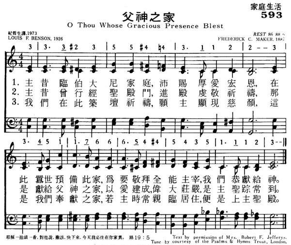
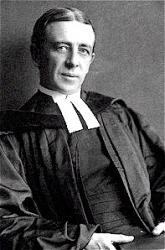

|
|
|
|
1 O Thou whose gracious presence blessed 2 When Thou didst pass the temple gate, 3 We build an altar here, and pray Amen. |
593父神之家
1.主昔临伯大尼家庭，沛赐厚爱宏恩，
在此嚣世预备此家，为要敬拜全能主宰， 我们恭献给神。 2.主昔曾行经圣殿门，进殿虔敬祈祷， 那是献给父神之家，以爱建成， 伟大庄严，是主圣踪常到。 3.我们在此筑坛祈祷，愿主显现慈颜， 这是我们奉献之家，若主时常亲临居住， 便是上主圣殿。 |
|
https://www.mred365.cn/szxg/7596.html
 https://hymnary.org/hymn/HEUB1957/page/348
|
|
|
|
|

| Text: | O Thou Whose Gracious Presence |
| Author: | Louis F. Benson |
| Tune: | REST |
| Composer: | Frederick C. Maker |
| Short Name: | Louis F. Benson |
| Full Name: | Benson, Louis F. (Louis FitzGerald), 1855-1930 |
| Birth Year: | 1855 |
| Death Year: | 1930 |
Benson, Louis FitzGerald,

D.D., was born at
Philadelphia, Penn., July 22, 1855, and educated at the University of Penn.
He was admitted to the Bar in 1877, and practised until 1884. After a course
of theological studies he was ordained by the Presbytery of Philadelphia
North, in 1888. His pastorate of the Church of the Redeemer, Germantown,
Phila., extended from his ordination in 1888 to 1894, when he resigned and
devoted himself to literary and Church work at Philadelphia. He edited the
series of Hymnals authorised for use by the General Assembly of the
Presbyterian Church in the U.S.A., as follows:—
(1) The Hymnal, Phila., 1895; (2) The
Chapel Hymnal, 1898; and (3) The School Hymnal,
1899.
Dr. Benson's hymnological writings are somewhat extensive. They include:—
(1) Hymns and Verses (original and
translations), 1897; (2) The Best Church Hymns, 1898;
(3) The Best Hymns, 1898; (4) Studies
of Familiar Hymns, 1903, &c.
Of his original hymns the following have come into American common use:—
I. In The Hymnal, 1895:—
| : | This hymn was written for the dedication of the manse of Grace Presbyterian Church in Jenkintown, Pennsylvania, and was first sung on New Year's Day, 1926. |
Tune Information
| Title: | REST (Maker) |
| Composer: | Frederick C. Maker (1887) |
| Meter: | 8.6.8.8.6 |
| Incipit: | 33323 55443 1122 |
| Key: | C Major |
| Copyright: | Public Domain |
| Short Name: | Frederick C. Maker |
| Full Name: | Maker, Frederick C. (Frederick Charles), 1844-1927 |
| Birth Year: | 1844 |
| Death Year: | 1927 |
Frederick C. Maker
(b. Bristol, England, August 6, 1844; d. January 1, 1927) received his early musical training as a chorister at Bristol Cathedral, England. He pursued a career as organist and choirmaster—most of it spent in Methodist and Congregational churches in Bristol. His longest tenure was at Redland Park Congregational Church, where he was organist from 1882-1910. Maker also conducted the Bristol Free Church Choir Association and was a long-time visiting professor of music at Clifton College. He wrote hymn tunes, anthems, and a cantata, Moses in the Bulrushes.
Bert Polman